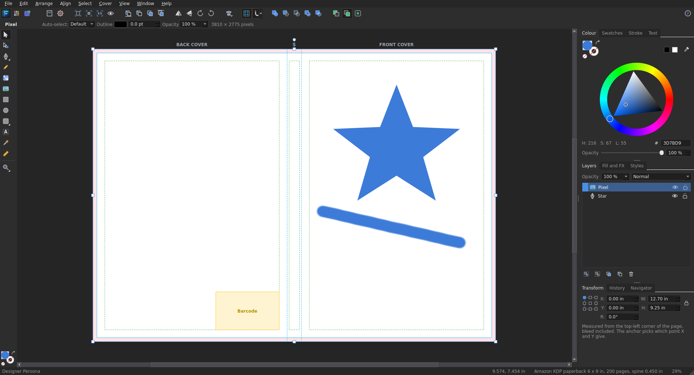

📖
Covers that fit the printer
Pick book size, page count and paper. Folio works out the spine and the full wrap for paperbacks and hardcovers, with bleed, hinges, safe margins and the barcode area shown on the page.
Folio works out your spine, bleed and safe margins for Amazon KDP, IngramSpark and Lulu, then gives you a print-ready PDF. Draw, paint, set type and export, all in one free program.
Tools on the left, panels on the right, your page in the middle. It feels like the professional apps, and it is made around one job: getting a cover to the printer.

The main window: tools, the cover with its guides, and the Colour, Layers and Transform panels.
Move your mouse over the cards. Each one is something Folio really does today.
Pick book size, page count and paper. Folio works out the spine and the full wrap for paperbacks and hardcovers, with bleed, hinges, safe margins and the barcode area shown on the page.
Each printer measures a cover a little differently. Choose yours and the sizes, papers, wrap and spine rules follow it. 126 book sizes are built in.
Books, eBook and audiobook covers, paper and photo sizes, social media, banners, cards, bookmarks, posters, phones and tablets. Search them, heart your favourites, save your own.
Classic serifs, bold sans, script and display fonts, all free to use on books you sell. Add your own by dropping in a .ttf, .otf or a whole .zip.
Rectangles, stars, hearts, arrows and more. A Pen for curves, a Pencil for freehand, and Add, Subtract, Intersect and Divide to combine shapes. Turn a title into curves you can edit.
Fill the cover in one click, get a warning when a picture is too small to print sharply, and use Paste Inside to put a photo inside a shape or inside the letters of a title.
The Pixel persona has paint, erase, blur, dodge and burn brushes, flood fill, and selections. A Brushes panel offers 11 families, from acrylics and chalk to ink and watercolour.
Export a print-ready PDF at the exact size with trim and bleed boxes and text as outlines. Or cut named slices, like the front cover as a JPEG for an ebook, and save them all at once.
Import PDF pages, Word documents (as editable text or as pages) and pictures including SVG, HEIC, WebP and PSD. Affinity files show their saved preview picture.
Rulers, guides you drag out, a grid, snapping, align and space evenly, layers with blend modes, groups, saved styles, and a History panel you can click to go back.
Unlimited undo, and an automatic rescue copy while you work. If the power goes, Folio offers your work back when it starts.
Folio is under the GNU General Public License. Use it, change it, share it. No account, no subscription, nothing that phones home.
Eight steps from a blank screen to a file you can upload. It takes about ten minutes.
Choose File, New (Ctrl+N). Under Books, pick Paperback book cover and your printer.
Your page shows the back cover, the spine and the front cover side by side.
Drag a photo onto the page, or use File, Place Image (Ctrl+Shift+I).
With the picture selected, open the Fill and FX tab and click Fill to cover the front cover, bleed included. Folio tells you if the picture is too small to print sharply.
Press T, click on the cover and type. Press Esc when you finish. In the Text tab choose a font from the groups (Classic, Modern, Script, Display), then set the size and spacing.
Use the colour wheel on the Colour tab to change the colour. Add an outline with the Stroke tab.
Choose Cover, Add Spine Text. Folio turns the text and centres it on the spine.
Press W to see the cover trimmed, exactly as it will look when the book is cut. Press it again to go back. File, Print Preview shows how it comes off your own printer.
Choose File, Export (Ctrl+Shift+E). Pick PDF for printing and leave Turn text into shapes ticked. That file is the one to upload to your printer.
For an ebook cover, use the Export persona (the third button at the top left). Tick Front cover and export it as a JPEG.
| V A P T | Move, Edit points, Pen, Text |
| M E U N G | Rectangle, Ellipse, Rounded rectangle, Pencil, Gradient |
| Z H or Space | Zoom, and move around the page |
| Ctrl+0 / 1 | Fit the page / actual pixels |
| Ctrl+G / Ctrl+Shift+G | Group / ungroup |
| Ctrl+R | Rulers (drag from them to make guides) |
| Tab | Hide or show all the panels |
| F1 | The full list inside Folio |
Straight answers, including the things Folio can't do yet.
Yes. Folio is free software under the GNU General Public License, version 3. There is no account, no subscription and no tracking. The built-in fonts are free for books you sell, and keep their own open licences.
A Linux computer (Linux Mint and Ubuntu are what it was built on) with Python 3 and PyQt5:
sudo apt install python3-pyqt5 python3 folio.py
To get it in your applications menu, run bash install.sh. PDF import uses poppler-utils, odd picture types use ImageMagick, and Word files can use LibreOffice. These are optional.
Not tested yet. Folio is built on Qt, which works on Windows and Mac, so it should be possible, but today it is only checked on Linux. If you can try it and tell us what happens, you'd be a big help. See Join the team.
Amazon KDP, IngramSpark and Lulu, for paperback and hardcover. Paperback spine rules follow each printer's published guide. Two numbers are careful estimates and the program says so: KDP hardcover sizes and IngramSpark's spine per page. Compare them with the printer's own calculator before you print.
Folio exports a PDF at the exact size, with the trim and bleed boxes set and the text turned into shapes, which is what printers want. It is still wise to open the printer's own previewer and check the result before approving.
Not fully. Affinity's file format is private, so Folio can only read the small preview picture saved inside the file. For full quality, open the design in Affinity, choose File, Export, PDF, then use Import in Folio.
No. Folio is an original program written from scratch. It borrows the familiar way professional design apps are laid out, so it feels comfortable if you have used one, but it contains none of their code or artwork.
Not yet. Folio works in RGB, which is what KDP, IngramSpark and Lulu all accept; they convert to their printing colours themselves. CMYK is on the list for later.
Folio saves a rescue copy every couple of minutes while you have unsaved changes. The next time you start it, it offers to open that copy. You can change how often in Edit, Settings.
Yes. In the Text tab, click More fonts and choose Add font files. Pick .ttf or .otf files, or a downloaded .zip, and they are ready to use straight away.
Yes. There are sizes for posters, flyers, cards, social media posts, banners and screens. The cover tools are just the part Folio does best.
Once Folio is on GitHub, open an issue there. Until then, email aaron@m4j.net. Tell us what you did, what you expected and what happened. A screenshot helps a lot.
Folio is made by 4ThePeople Media in Crossville, Tennessee, and it is open for anyone to help build.
No question matches. Try another word, or ask us.
Folio is a working program you can make real covers with. It is young, so expect rough edges. Here is what is finished, what is being worked on and what comes next.
Folio is made in the open, and there is room for everyone: people who design, write, test, translate or code. You don't need to be a programmer.
Use Folio for a real cover, order a proof, and tell us what was wrong, confusing or missing.
Know a printer's rules? Help us check spine, wrap and bleed numbers, or add another printer.
Icons, templates, cover layouts, brush ideas, and ways to make the screens clearer.
Python and Qt. Fix a bug, build a feature on the list above, or help package it for Linux software stores.
Help with tutorials, plain-language help pages and video walkthroughs for new authors.
Bring Folio to your language so more authors can make their own covers.
Fill this in and your email program opens with a message ready to send to the team. Nothing is sent from this page.
Prefer to write directly? aaron@m4j.net
Folio will live on GitHub. The steps are the usual ones:
1. Fork the project and make a branch 2. Make your change (the tests must all say ALL GOOD) 3. Open a pull request and tell us what you changed